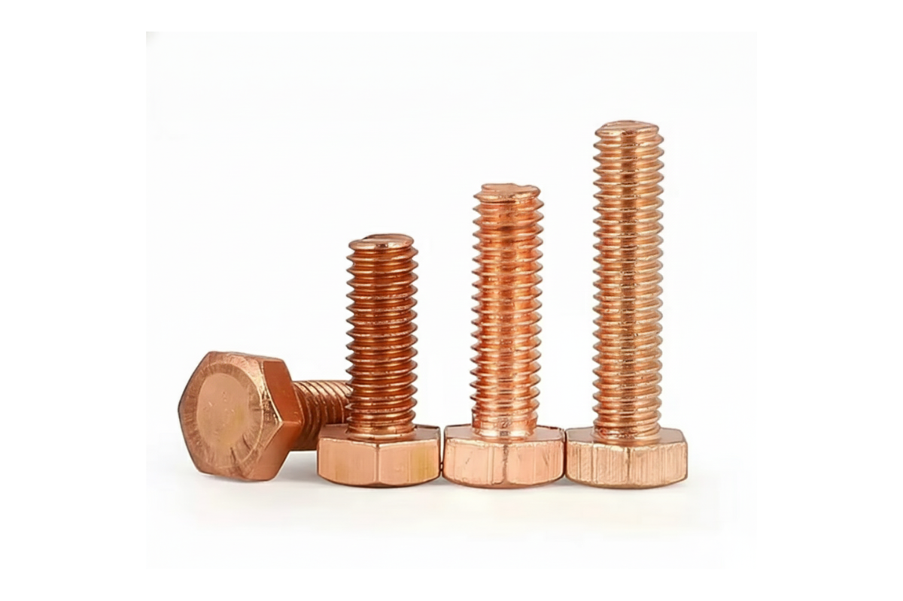
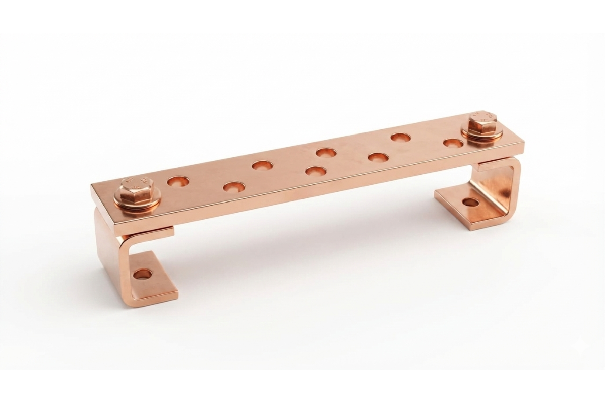
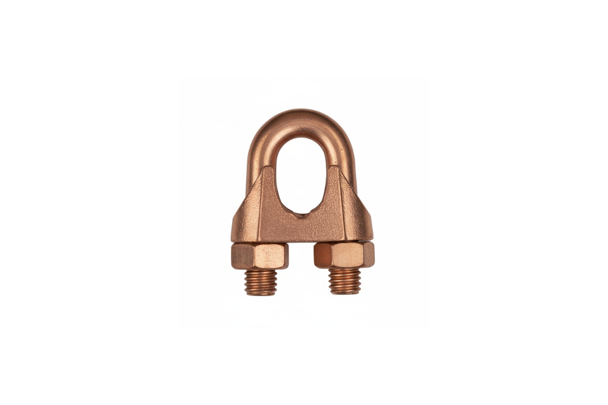
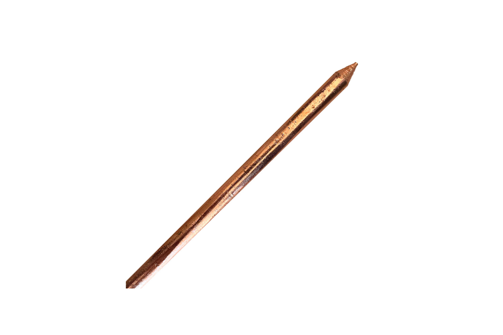

Produtos de Aterramento
Linha profissional de produtos de aterramento elétrico cobreados quimicamente, desenvolvidos para alta condutividade, resistência à corrosão e longa vida útil, atendendo normas técnicas e aplicações industriais.



